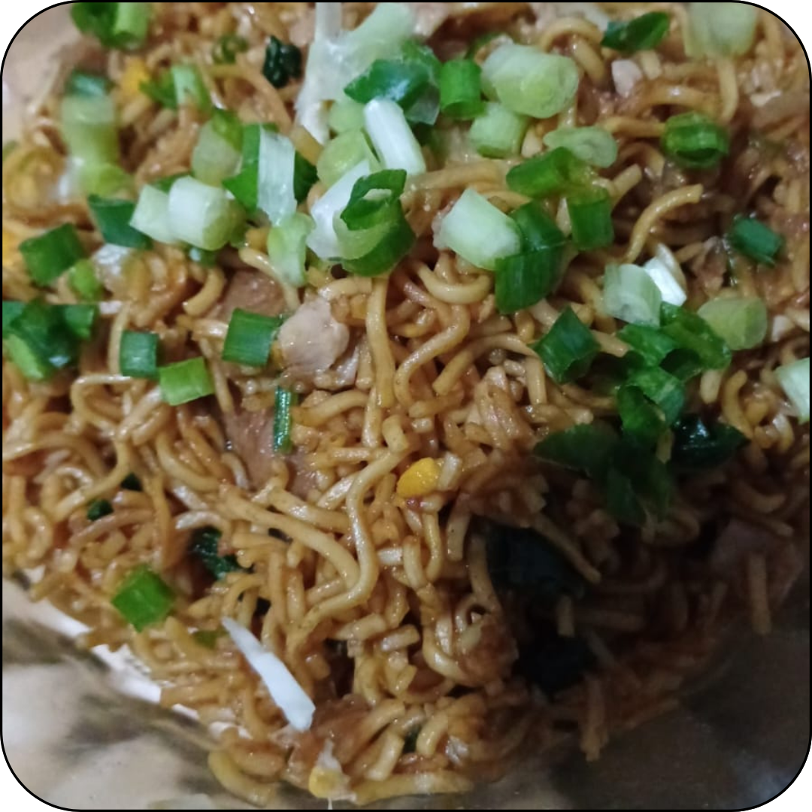
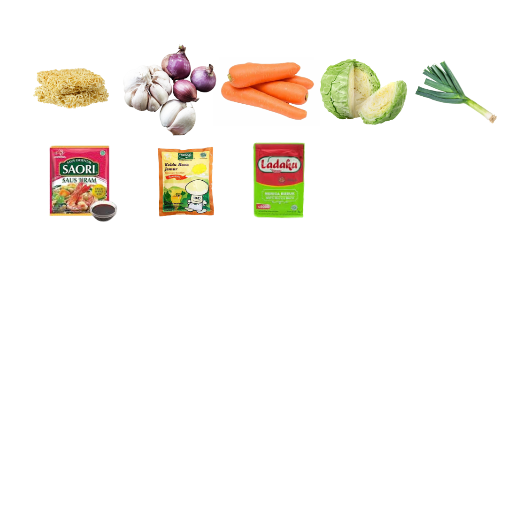

Mie Goreng

Bahan:
- Mie Menjangan / Mie Telur
- Wortel
- Kubis
- Daun Bawang / Pre
- Kecap
- Saos Tiram
- Kaldu Jamur
- Penyedap Rasa
- Bawang Putih
- Bawang Merah

Cara Membuat:
- Rebus mie hingga matang
- Ulek bawang putih dan bawang merah
- Potong wortel, kubis, dan pre seperti membuat sop
- Tumis bumbu halus, lalu masukkan pre setengah. Tambahkan air ulekan
- Masukkan wortel dan kubis, tambahkan air sedikit agar menjadi empuk
- Masukkan mie, tambahkan saos tiram dan penyedap rasa sesuai selera
- Masukkan sisa pre, tunggu hingga matang